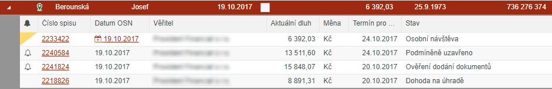

BARVY položek Seznamu
Každá záložka má při zobrazení přiřazené barevné podbarvení jednotlivých spisů. Tímto způsobem je zajištěno, že uživatel na první pohled pozná, na které záložce se nachází.
Barevné schéma je následující:
Záložka NOVÝ - ČERVENÁ barva
Záložka OSOBNÍ NÁVŠTĚVY - ORANŽOVÁ barva
Záložka DOHODY / SK - ZELENÁ barva
Záložka KE ZPRACOVÁNÍ - MODRÁ barva
Záložka UZAVŘENÉ - ŠEDÁ barva
Hlavním důvodem je však rozlišení jednotlivých spisů od sebe v případě zobrazení seznamu dle Dlužníka. Pokud má dlužník například čtyři spisy, pak je dle barvy hned vidět, že má např. dva nové, jeden s naplánovaným datem OSN a jeden uzavřený
